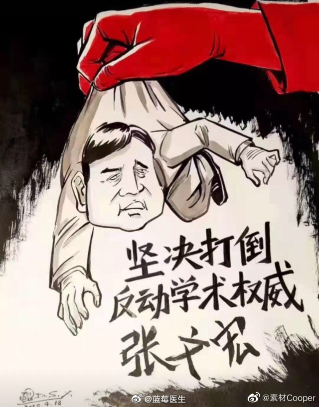

举报挖坟这种下作风气，是什么时候开始的呢？//@华杉2009:人民配不上他们的英雄。忘了这话谁说的。雨果？
@蓝莓医生:
#复旦回应张文宏博士学位论文被举报#朋友圈、微博、某音上到处弥漫着张文宏博士论文抄袭的信息了，一些早年念过博士的同学都明白，在前言部分为了凑篇幅抄录一些最新进展的情况很多时候是一种真实的存在。前言与他的研究内容无关。
但在今天这个相关性却被无限放大了，全国人民妇孺皆知了，不知道的人还以为张医生抄了别人的论文内容。是的，张医生的早年研究或许存在不妥，不应该大段抄录，不应该不注明来源。如果非要用放大镜去挖坟扒土，谁能无错？谁能保证自己幼小的时候没尿过床（我认为，研究生毕业就是科学路上的婴幼儿）。
一个反动的资产阶级学术权威呼之欲出了，一个敢说真话实话，为抗疫做出过巨大贡献的专家似乎就要被反绑双手接受人民的唾弃并踩上一万只脚了，上次我配这个图，有人认为太过，现在你还认为这个过火吗？是不是脊背发凉，是不是听到了来自不明空间里的笑声？
一些人朝思暮想的阴谋就要达到了，我百思不得其解：为什么他们对一个临床医生如此痛恨入骨，非要捂住他那科学的专业的嘴巴？为什么他们自己满肚子坏水却要求别人一定是圣人？
但在今天这个相关性却被无限放大了，全国人民妇孺皆知了，不知道的人还以为张医生抄了别人的论文内容。是的，张医生的早年研究或许存在不妥，不应该大段抄录，不应该不注明来源。如果非要用放大镜去挖坟扒土，谁能无错？谁能保证自己幼小的时候没尿过床（我认为，研究生毕业就是科学路上的婴幼儿）。
一个反动的资产阶级学术权威呼之欲出了，一个敢说真话实话，为抗疫做出过巨大贡献的专家似乎就要被反绑双手接受人民的唾弃并踩上一万只脚了，上次我配这个图，有人认为太过，现在你还认为这个过火吗？是不是脊背发凉，是不是听到了来自不明空间里的笑声？
一些人朝思暮想的阴谋就要达到了，我百思不得其解：为什么他们对一个临床医生如此痛恨入骨，非要捂住他那科学的专业的嘴巴？为什么他们自己满肚子坏水却要求别人一定是圣人？
- 